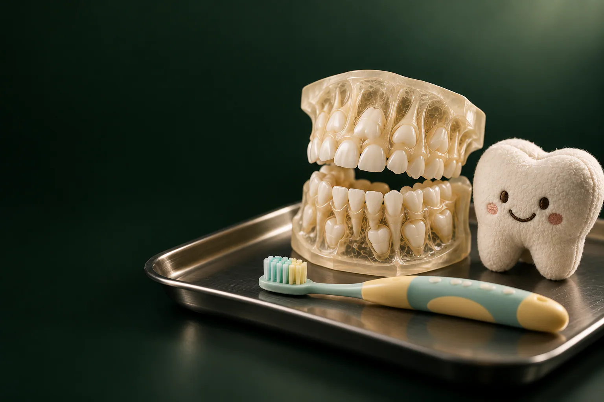

Детская стоматология в Удельной
Детская стоматология «Умной Медицины» в пос. Удельная (Раменский округ): это лечение и удаление молочных зубов, профилактика кариеса и наблюдение за прикусом, пока зубы у ребёнка меняются.
Записаться на консультациюВсе цены по этапам
Имеются противопоказания. Необходима консультация специалиста.
- 2 500 ₽первичная консультация с планом лечения
- 7 000 ₽лечение кариеса молочного зуба
- 2 650 ₽удаление молочного зуба
- от 450 ₽фтор-лак на один зуб
Страница в разработке
Здесь скоро будет вся страница
Мы наполняем этот раздел. Пока вернитесь на главную: там уже работает всё, что готово.
Вернуться на главную